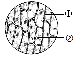

2023年北京中考生物 第3题 解析
3. 在显微镜下观察洋葱鳞片叶内表皮临时装片，视野如下图。下列相关叙述错误的是（ ）

A. ①为洋葱鳞片叶内表皮细胞
B. ②可能是由于加盖盖玻片操作不规范引起的
C. 用碘液染色后能够更清晰地观察到细胞核
D. 细胞的放大倍数为目镜与物镜放大倍数之和
【答案】D
【解析】
【分析】制作洋葱表皮细胞临时装片的简要步骤：擦、 滴（清水）、撕 、展 、盖、 染 、吸。图中，①是洋葱鳞片叶内表皮细胞，②是气泡。
【详解】A．一般来说，气泡在显微镜的视野中呈现为具有较黑、较宽边缘的图像，形状为圆形或椭圆形。会变形、会移动；而细胞有一定的形态和结构，不变形、不移动。因此，①为洋葱鳞片叶内表皮细胞，②为气泡，A正确。
B．盖盖玻片时，用镊子夹起盖玻片的一边，使它的另一边先接触载玻片上的水滴，然后缓缓放下，这样可以避免盖玻片下面出现气泡而影响观察。故②可能是由于加盖盖玻片操作不规范引起的，B正确。
C．细胞核中容易被碱性染料染成深色的物质，叫做染色体。故用碘液染色后能够更清晰地观察到细胞核，C正确。
D．显微镜的放大倍数=目镜放大倍数×物镜放大倍数，故细胞的放大倍数为目镜与物镜放大倍数之积，D错误。
故选D。